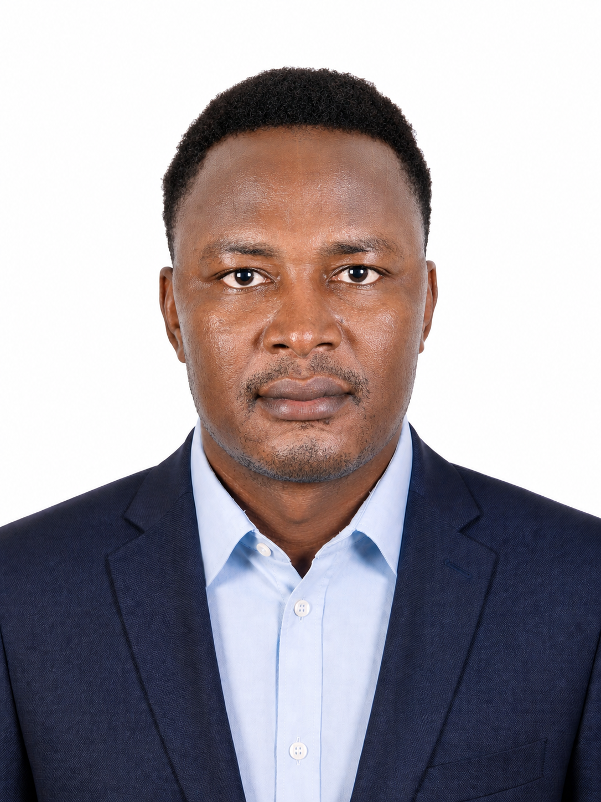

Je viens d'un parcours atypique. J'ai travaillé au Tchad, formé des apprenants, évolué dans des environnements avec peu de ressources. Ça m'a appris à me débrouiller et à ne jamais oublier la personne derrière le problème technique.

Déploiement complet d'une infrastructure virtualisée : serveurs Windows/Linux, Active Directory, DNS, DHCP, pfSense, VPN, supervision Zabbix et Wazuh.
Voir le projetConception d'une architecture IAM complète, déploiement et audit d'un Bastion Linux sécurisé, conformité aux recommandations ANSSI.
Voir le projetCréation d'un domaine AD, gestion des OU, GPO et permissions. Configuration DNS, DHCP et intégration Azure AD et Microsoft 365.
Voir le projetConception d'un plan d'adressage IP, segmentation VLAN, configuration pfSense et mise en place d'un VPN site-à-site.
Voir le projetDéploiement d'un environnement de supervision avec Zabbix pour le monitoring et Wazuh comme SIEM pour la collecte et l'analyse des logs.
Voir le projetAdministration Microsoft 365 et Azure AD : gestion des comptes, licences, MFA, Intune et politiques de sécurité cloud.
Voir le projetTitulaire d'une Licence en Informatique de l'Université de Douala (Cameroun), je poursuis un Mastrère Expert Réseaux, Infrastructures & Sécurité (RNCP39781 — Niveau 7) à l'IMIE Paris en alternance.
Je recherche un contrat d'apprentissage pour septembre 2026.
Rythme 3 semaines entreprise / 1 semaine école.